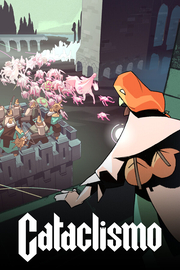

Cataclismo
Detalles
 |
|
| Tiempo de juego | No Jugado |
| Última actividad | Nunca |
| Añadido | 10/10/2025 17:13:21 |
| Modificado | 13/11/2025 0:24:07 |
| Estado de finalización | Not Played |
| Librería | Playnite |
| Fuente | PORCHE |
| Plataforma | PC (Windows) |
| Fecha de lanzamiento | 20/03/2025 |
| Puntuación de la Comunidad | 87 |
| Puntuación de la Crítica | 82 |
| Puntuación de usuario | |
| Género | Estrategia Simuladores |
| Desarrollador | Digital Sun |
| Editor | Hooded Horse |
| Característica | Alternativas De Color Cloud Saves Comodidad De La Cámara Controles De Volumen Personalizados Cromos De Dificultad Ajustable Guardar En Cualquier Momento Logros De Opción Solo Ratón Opciones De Subtítulos Préstamo Familiar Sonido Estéreo Un Jugador Workshop |
| Enlaces | Punto de encuentro Discusiones Guías Noticias Página de la tienda PCGamingWiki Logros Workshop |
| Tag | 4X Bélicos Construcción Construcción de bases Construcción de ciudades Economía Estrategia ETR Gestión Gestión de recursos Gran estrategia Históricos Modificables Mundo abierto Sandbox Simulación Tácticos Tiempo real con pausas Un jugador Valor continuo |
Descripción
Guía a los últimos supervivientes del Cataclismo en un mundo corrompido que busca destruir los últimos restos de la humanidad. Construye fortalezas ladrillo a ladrillo, diseñando complejas estructuras de madera y piedra con las que rechazar las hordas de horrores que intentarán acabar con tu grupo. Dirige poderosas unidades para reforzar las defensas, empleando sus diferentes habilidades para contener al enemigo en una brecha tras otra. Lidera incursiones a lo desconocido para obtener recursos esenciales para ampliar tu poderío militar y capacidad de construcción mientras resistes asaltos cada vez más poderosos. Noche tras noche, el asedio es constante.

Tus ciudadelas, alejadas de la relativa protección de la última ciudad, deberán aguantar contra las hordas de horrores y evitar que alcancen el corazón de la humanidad. Edifica fortalezas inexpugnables en diversos biomas con un completo sistema de construcción que te permite diseñar las defensas con total libertad y creatividad estratégica, adaptándote al entorno de cada lugar. Aprovecha los cuellos de botella naturales, el terreno elevado y los recursos de la región y prepárate para los ataques que trae la noche.
El sistema de construcción modular te permite crear las fortalezas de tus sueños, sea bloque a bloque, usando planos que has diseñado con antelación o aprovechando las creaciones de otros jugadores de la comunidad. Emplea los recursos que obtengas para crear estructuras con las que acceder a lugares del mapa inaccesibles o para preparar fortificaciones que impidan el paso a los horrores y proporcionen posiciones superiores a tus tropas.
Construye estructuras rápidas y baratas de madera o recurre a la firme piedra para resistir las acometidas del enemigo. Vigila la integridad estructural y los pilares maestros, ya que el colapso de una estructura aplastará a enemigos y amigos por igual. También puedes crear vulnerabilidades estratégicas intencionadas para derribar edificios sobre tus enemigos.
Adapta tu bastión a sus crecientes necesidades obteniendo nuevas herramientas y expande tus dominios para obtener los recursos necesarios para crear tus invencibles defensas. Optimiza la ruta desde los depósitos de recursos a tus almacenes con estructuras adecuadas y edifica sobre los tejados para aprovechar el limitado espacio del que dispones.

Los horrores atacarán tus defensas durante el día, pero por la noche es cuando llega el verdadero asalto. Pasa los días explorando el mundo y ampliando tus fuerzas, porque cuando el sol se ponga llegará el momento de repartir tus fuerzas por las defensas para resistir la horda de esa noche.
Dirige con astucia a tus soldados: desde arqueros con vista de lince hasta cañoneros armados con explosivos te permitirán responder a una situación en constante cambio y a la llegada de nuevos horrores. Atrae al enemigo a una encerrona llena de trampas letales y haz llover sobre ellos flechas incendiarias y tarros llenos de veneno desde las almenas. Maniobra a tus tropas a posiciones tácticas para beneficiarte de sus rasgos y habilidades, que pasarán a estar disponibles con cada mejora. Elige la altura ideal para cada unidad: la buena arquitectura contempla la defensa en varios niveles.
Erige estructuras vitales para reforzar tus defensas contra la creciente amenaza y alcanza nuevas cotas de prosperidad con tecnologías innovadoras. Los puestos de recogida de recursos, los centros de reclutamiento y las viviendas de tus ciudadanos apoyan a las tropas de forma directa e indirecta. Y si las murallas caen, hasta las casas pueden servir de segunda línea de defensa. Pase lo que pase, la ciudadela debe resistir.

Cataclismo ofrece tres opciones: una campaña de un jugador épica con una historia cautivadora, un modo de escaramuzas con mapas elaborados a mano y un modo de desafío infinitamente jugable que te pondrá a prueba en mapas generados automáticamente en los que deberás rechazar oleadas cada vez más peligrosas de horrores. Un complejo editor de mapas te ofrece la oportunidad de diseñar y compartir tus propios mapas de escaramuza para retar a la comunidad, mientras que el completo sistema de construcción permitirá a cualquiera con sueños de arquitectura crear y compartir sus planos para ayudar en la defensa contra los horrores.
El Cataclismo devastó el mundo, pero la esperanza es lo último que se pierde. Guía a la humanidad a través de la oscuridad hacia un futuro resplandeciente, construye imponentes fortalezas y lidera a tus tropas en batallas en tiempo real contra una horda aparentemente interminable que no se detendrá ante nada con tal de destruir a tu pueblo.